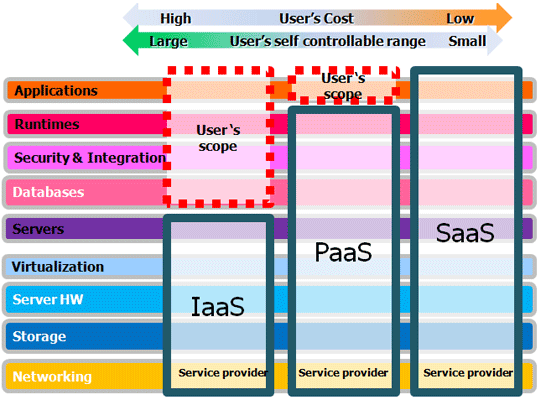
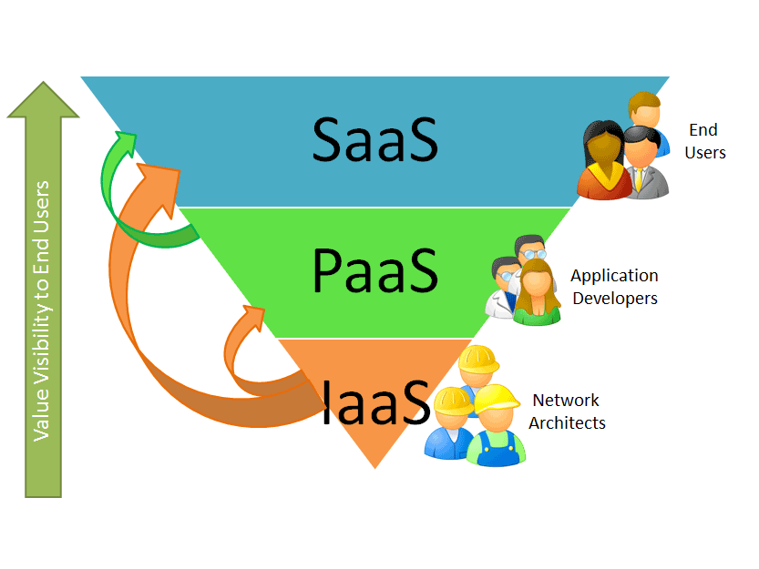

Implementasi komputasi awan yang menyediakan sumber daya dan lingkungan pengembangan terkonfigurasi bagi pengembang perangkat lunak untuk membangun aplikasi dan layanan melalui internet

sumber : http://th.nec.com/en_TH/solution/cloud/Cloud_solution/Service_Delivery.html
sumber : http://www.coloandcloud.com/editorial/platform-as-a-service-overview-paas/